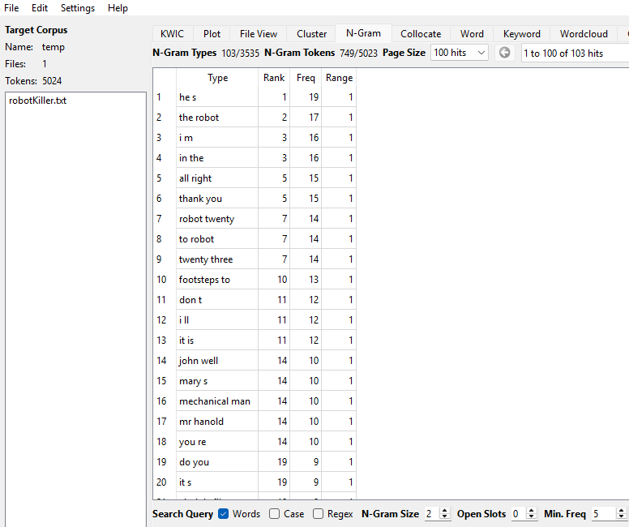
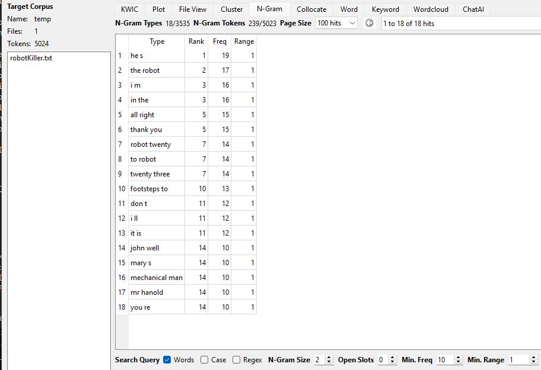
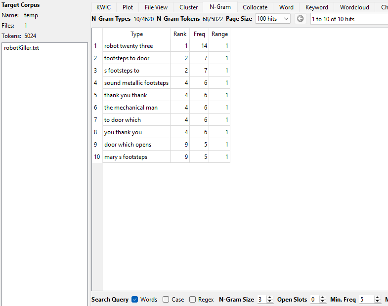
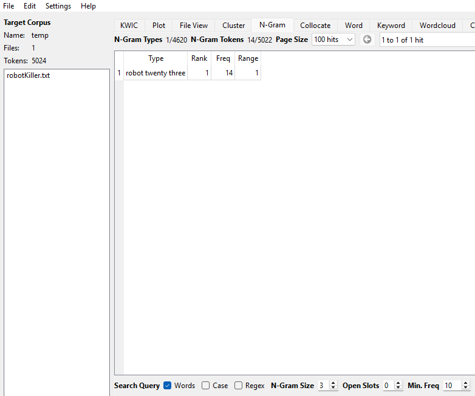
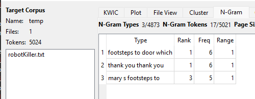
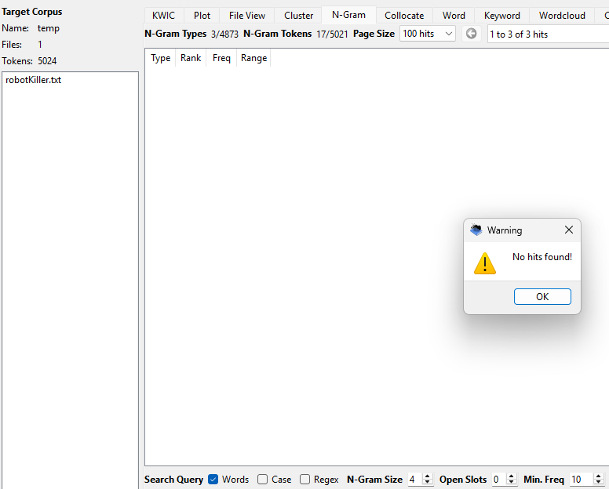
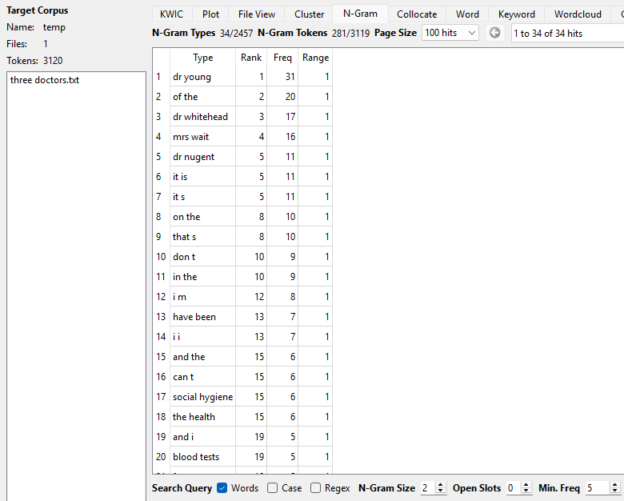
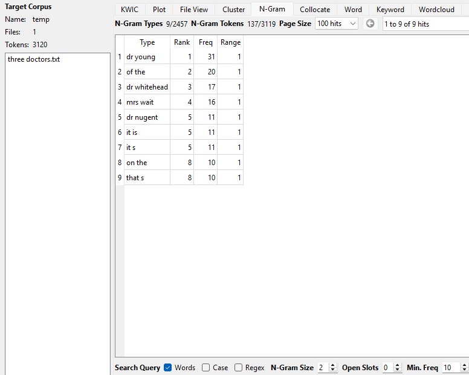
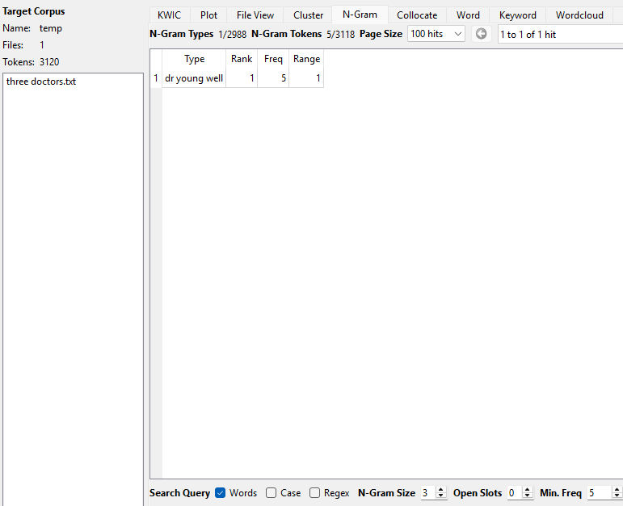
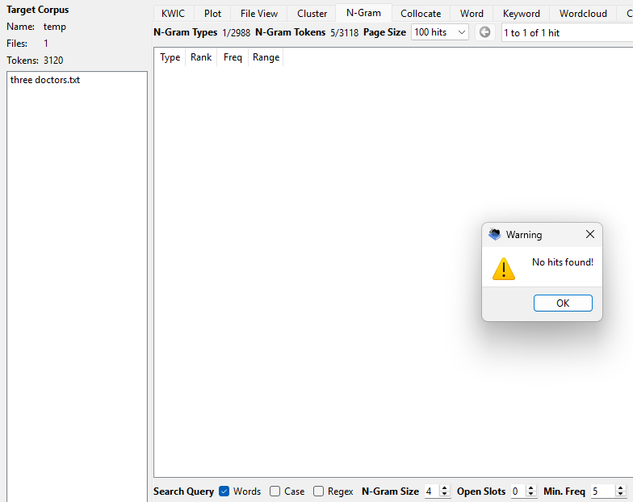

Introduction
For this corpus analysis project, I compared two very different text documents: The Robot Killer, a science fiction drama, and Three Doctors Discuss Syphilis, a public health and medical discussion script. I used AntConc and Voyant Tools to explore repeated words and n-grams in both texts.
These texts are useful to compare because they are opposites. The Robot Killer is meant to entertain, so it contains dramatic dialogue, repeated commands, and action-based phrases. Three Doctors Discuss Syphilis is meant to inform and persuade, so it contains repeated names, formal discussion, and medical vocabulary.
My text files were stored in my GitHub repository outside the docs folder as part of my text-analysis workspace.
Texts Being Compared
- Text 1: The Robot Killer
- Text 2: Three Doctors Discuss Syphilis
Repo link: View my GitHub repository
Method
I analyzed each text separately in AntConc so that the repeated phrases would not be mixed together. I tested different n-gram sizes, especially 2-grams, 3-grams, and 4-grams, and also changed the minimum frequency threshold from 5 to 10.
I also used Voyant Tools to begin exploring word frequency patterns and visual differences between the corpora.
AntConc Results: The Robot Killer
In The Robot Killer, 2-grams appeared very frequently, and several 3-grams also repeated often.
Some repeated phrases included the robot
, thank you
, robot twenty three
,
mechanical man
, and footsteps to door
.






AntConc Results: Three Doctors Discuss Syphilis
In Three Doctors Discuss Syphilis, the most frequent repeated phrases were mostly 2-grams,
such as dr young
, dr whitehead
, mrs wait
, and blood tests
. Unlike
The Robot Killer, this text barely had any 3-grams above a frequency of 5, and 0 4-grams over frequency 5 or 10. This fits the more formal and informational style of the text.




Comparison of N-Gram Patterns
| Feature | The Robot Killer | Three Doctors Discuss Syphilis |
|---|---|---|
| N-grams above 5 | 2-grams, 3-grams, and some 4-grams | Mainly 2-grams, with very few 3-grams |
| N-grams in double digits | 2-grams and at least one 3-gram | 2-grams only |
| Repeated phrase types | Commands, character references, stage directions | Doctor names, patient names, medical discussion terms |
| Overall style | Dramatic, emotional, action-oriented | Formal, educational, informative |
Discussion
Both texts had a bunch of 2-grams, but they each had different purposes for what was repeated. As the n-gram value went up, The Robot Killer repeated stage commands and character references. Three Doctors Discuss Syphilis repeated doctor names and medical terms, but did not have many longer n-grams that repeated frequently.
The Robot Killer repeats phrases connected to action, commands, and robot-centered dialogue, which fits a script. On the other hand, Three Doctors Discuss Syphilis repeats doctor names and public-health language, which reflects its educational purpose.
One interesting difference is that The Robot Killer continued to produce meaningful 3-grams and even some 4-grams above a frequency of 5, while the medical discussion text dropped off sharply after 2-grams. This suggests that the dramatic script reuses more fixed phrases, while the medical text is more varied in sentence structure even though its subject is repetitive.